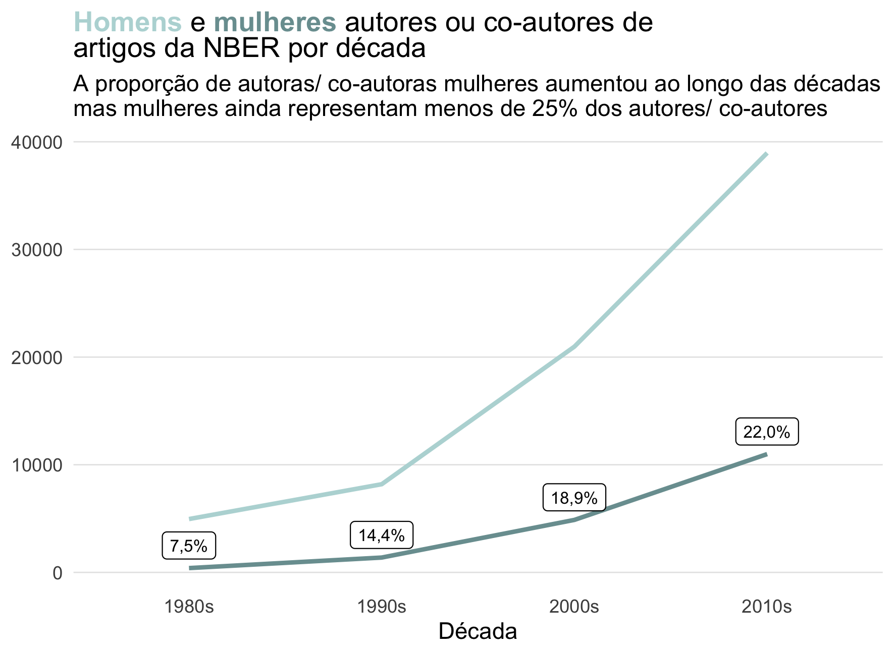
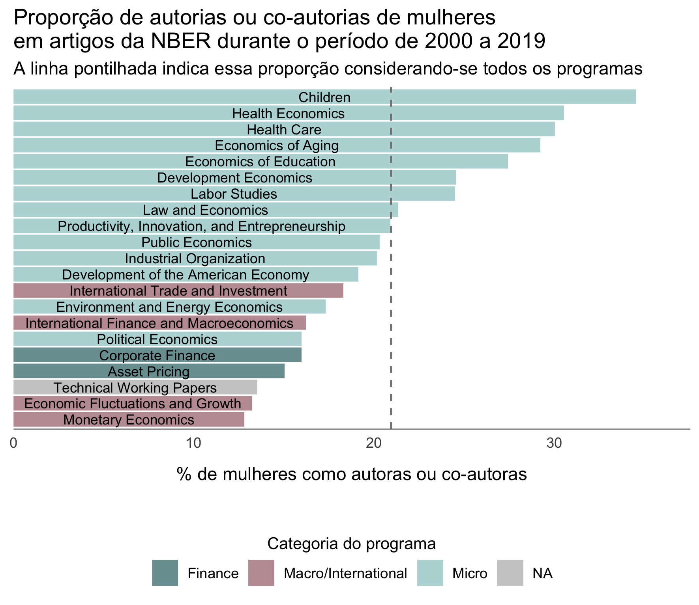

Explorando os dados dos artigos da NBER #TidyTuesday

Os dados analisados
O post de hoje explora os dados dos artigos publicados pela National Bureau of Economic Research (NBER), que fazem parte da semana 40 do projeto #TidyTuesday. Os dados estão disponíveis no repositório oficial do projeto.
National Bureau of Economic Research (NBER) é uma organização sem fins lucrativos norte-americana voltada para pesquisa e “comprometida em realizar e disseminar pesquisas econômicas imparciais entre formuladores de políticas públicas, profissionais de negócios e a comunidade acadêmica”.
Fonte: Wikipedia
Essa é a minha segunda participação no #TidyTuesday e tem sido super proveitoso participar, porque acabo aprendendo novas funções de pacotes que eu uso e amo, como o dplyr e o ggplot2, e também acabo explorando outros pacotes. Essa semana, além do ggtext que eu conheci semana passada, também usei o pacote gender, que há um tempo eu tinha vontade de usar, mas ainda não tinha tido coragem de explorar.
Ah, se você não sabe o que é a #TidyTuesday, eu explico melhor no meu post anterior.
Leitura do banco de dados e carregamento dos pacotes
Como comentei, eu usei os pacotes gender, ggtext e o tidyverse. No primeiro uso do pacote gender também é necessário instalar o genderdata, que eu só consegui instalar usando o código comentado abaixo - por alguma razão, não instalou automaticamente no meu computador.
pacman::p_load(tidyverse, ggtext, gender)
# devtools::install_github("ropensci/genderdata")Para ler o banco de dados, usei o código fornecido no repositório do #TiduTuesday, que une vários bancos diferentes com a função left_join:
papers <- readr::read_csv('https://raw.githubusercontent.com/rfordatascience/tidytuesday/master/data/2021/2021-09-28/papers.csv')
authors <- readr::read_csv('https://raw.githubusercontent.com/rfordatascience/tidytuesday/master/data/2021/2021-09-28/authors.csv')
programs <- readr::read_csv('https://raw.githubusercontent.com/rfordatascience/tidytuesday/master/data/2021/2021-09-28/programs.csv')
paper_authors <- readr::read_csv('https://raw.githubusercontent.com/rfordatascience/tidytuesday/master/data/2021/2021-09-28/paper_authors.csv')
paper_programs <- readr::read_csv('https://raw.githubusercontent.com/rfordatascience/tidytuesday/master/data/2021/2021-09-28/paper_programs.csv')
joined_df <- left_join(papers, paper_authors) %>%
left_join(authors) %>%
left_join(paper_programs) %>%
left_join(programs)%>%
mutate(
catalogue_group = str_sub(paper, 1, 1),
catalogue_group = case_when(
catalogue_group == "h" ~ "Historical",
catalogue_group == "t" ~ "Technical",
catalogue_group == "w" ~ "General"
),
.after = paper
)sample_n(joined_df, 10)## # A tibble: 10 × 12
## paper catalogue_group year month title author name user_nber user_repec
## <chr> <chr> <dbl> <dbl> <chr> <chr> <chr> <chr> <chr>
## 1 w12852 General 2007 1 Capital… w1063… Seba… sebastia… ped3
## 2 w22533 General 2016 8 The I T… w1061… Yuli… yuliy_sa… <NA>
## 3 w18623 General 2012 12 The Imp… w1862… Mahe… maheshwo… <NA>
## 4 w15639 General 2010 1 Growth … w0855… Kenn… kenneth_… pro164
## 5 w10158 General 2003 12 Governa… w8386… Luc … luc_laev… pla174
## 6 w25270 General 2018 11 Non-Ran… w2527… Stan… stanley_… <NA>
## 7 w28243 General 2020 12 Transhu… w2305… Eoin… eoinmcgu… pmc163
## 8 w25728 General 2019 4 The Imp… w2402… Akir… akira_sa… <NA>
## 9 w2522 General 1988 2 Sectora… w2514… Robe… robert_s… pst85
## 10 w2412 General 1987 10 The Equ… w2171… Davi… david_ro… pro406
## # … with 3 more variables: program <chr>, program_desc <chr>,
## # program_category <chr>O banco incluí uma lista de artigos da NBER acompanhados da data de publicação, nome dos autores e programa ao qual o artigo pertence. O banco inclui artigos do período de 1973 a 2021.
Identificando o gênero dos autores
Há um tempo eu ouço falar no pacote gender, mas nunca o havia utilizado. Esse pacote permite identificar o gênero da pessoa com base no primeiro nome e no seu ano de nascimento. Por exemplo, de todos as pessoas chamadas Steve que nasceram em 1983, 99,4% eram homens e 0,6% eram mulheres. Logo, o pacote classificará um Steve nascido nesse ano como alguém do gênero masculino.
Vale dizer que é um pacote que usa um banco de dados com nomes em inglês, então seu funcionamento é limitado esse tipo de dado. Para os autores dos artigos da NBER, o pacote foi capaz de identificar o gênero de mais de 80% dos autores, então segui com a análise.
As análises que eu conduzi aqui foram baseadas no artigo Female representation and collaboration at the NBER, escrito por Ben Davies. Eu tentei criar meu próprio script, sem “colar” do dele para me desafiar (e porque, para ser honesta, eu demorei para perceber que o post tinha um link para o script, haha!). Mas, eventualmente, o script do Ben Davies foi consultado.
O meu primeiro passo foi criar duas colunas: uma coluna com o primeiro nome de cada autor (coluna first_name) e uma coluna com a data de nascimento estimada para cada autor (coluna birth_year). Estimei como ano de nascimento a data de publicação do artigo menos 35 anos - uma estratégia que não é à prova de falhas, mas que eu considerei uma estimativa válida.
joined_df$first_name <- sapply(strsplit(joined_df$name, " "), `[`, 1)
joined_df$birth_year <- joined_df$year - 35O próximo passo foi aplicar a função gender_df ao data frame para estimar os gêneros dos autores.
df_gender <- gender::gender_df(joined_df,
name_col = "first_name",
year_col = "birth_year",
method = "ssa")## Warning: The `.dots` argument of `group_by()` is deprecated as of dplyr 1.0.0.
## This warning is displayed once every 8 hours.
## Call `lifecycle::last_lifecycle_warnings()` to see where this warning was generated.Isso resultou no seguinte banco de dados:
sample_n(df_gender, 10)## # A tibble: 10 × 6
## name proportion_male proportion_female gender year_min year_max
## <chr> <dbl> <dbl> <chr> <dbl> <dbl>
## 1 James 0.997 0.0031 male 1955 1955
## 2 David 0.992 0.0081 male 1985 1985
## 3 Matthew 0.999 0.0014 male 1962 1962
## 4 Kirsten 0 1 female 1975 1975
## 5 Douglas 0.996 0.0044 male 1970 1970
## 6 Gene 0.972 0.0277 male 1980 1980
## 7 Ricardo 0.993 0.0073 male 1980 1980
## 8 Todd 0.996 0.0035 male 1970 1970
## 9 Adam 0.995 0.0052 male 1978 1978
## 10 Stephen 0.992 0.0075 male 1973 1973O próximo passo foi unir o banco de dados com os artigos, o joined_df, ao banco com os gêneros, o df_gender. Para isso, eu inicialmente tive que filtrar o banco df_gender para incluir apenas os casos não repetidos de nome e ano de nascimento, além de renomear algumas colunas para possibilitar o left_join. Ao final, fiquei com um data frame chamado df.
df_gender <- df_gender %>% rename(first_name = name,
birth_year = year_min) %>%
select(first_name, birth_year, gender) %>% distinct()
df <- left_join(joined_df, df_gender)## Joining, by = c("first_name", "birth_year")sample_n(df, 10)## # A tibble: 10 × 15
## paper catalogue_group year month title author name user_nber user_repec
## <chr> <chr> <dbl> <dbl> <chr> <chr> <chr> <chr> <chr>
## 1 w24211 General 2018 1 "The Di… w2421… Eric… erica_my… pmy46
## 2 w22015 General 2016 2 "Social… w2201… Patr… patricia… <NA>
## 3 w25323 General 2018 12 "Invest… w2532… Sand… sandeep_… <NA>
## 4 w14919 General 2009 4 "Reply … w1036… Troy… troy_dav… pda131
## 5 w24423 General 2018 3 "Are Re… w8541… Neer… neeraj_k… pka320
## 6 w11456 General 2005 7 "Mexica… w8344… Darr… darren_l… plu41
## 7 w28162 General 2020 12 "Why is… w2816… Salo… salomon_… <NA>
## 8 w28151 General 2020 11 "Revenu… w9146… Anto… antoinet… psc180
## 9 w7296 General 1999 8 "The Go… w1006… Henr… henry_fa… <NA>
## 10 w7584 General 2000 3 "A Dyna… w7584… Step… <NA> <NA>
## # … with 6 more variables: program <chr>, program_desc <chr>,
## # program_category <chr>, first_name <chr>, birth_year <dbl>, gender <chr>Proporção de mulheres autoras ou co-autoras de artigos da NBER por década
O próximo passo foi criar uma variável que correspondesse à década de publicação do artigo, chamada de decade. Eu incluí as décadas de 1980 a 2010 em um objeto ( decades), para filtrar o banco posteriormente. Essas décadas foram escolhidas por serem as com dados completos, referentes aos 10 anos.
df <- df %>% mutate(decade = factor(paste0((floor(year / 10) * 10),"s")))
decades <- c("1980s", "1990s", "2000s", "2010s")A tabela abaixo resume a proporção de mulheres autoras/ co-autoras por década, bem como a proporção de autores em cada década cujo gênero não pode ser identificado.
tbl_sum <- df %>% filter(decade %in% decades) %>%
group_by(decade, gender) %>%
count() %>%
spread(gender, n) %>%
rename(NI = "<NA>") %>%
mutate(total = female + male,
prop.f = round(100*female/total,2),
prop.m = round(100*male/total,2),
estimated.sex = 100-round(100*NI/(female+male+NI),2))
tbl_cont <- df %>% filter(!is.na(gender),
decade %in% decades) %>%
group_by(decade, gender) %>%
count()Década | Autoras/ Co-autoras mulheres | Autores/ Co-autores homens | Proporção de autoras mulheres (%) | Proporção de autores com gênero identificado (%) |
1980s | 401 | 4956 | 7,49 | 85,75 |
1990s | 1380 | 8191 | 14,42 | 85,22 |
2000s | 4877 | 20975 | 18,87 | 82,32 |
2010s | 10990 | 38964 | 22,00 | 80,00 |
Então, eu optei por criar um gráfico de linhas para mostrar a evolução da quantidade de autores/ co-autores de ambos os gêneros ao longo das décadas. Além disso, incluí no gráfico um rótulo indicando a proporção de mulheres. Usei para isso a camada geom_label, que por alguma razão eu sempre evito, tanto que essa foi a primeira vez que usei essa camada na vida, haha.
ggplot() +
geom_line(data = tbl_cont,
aes(x = decade, y = n,
group = gender, color = gender),
size = 1) +
geom_label(data = tbl_sum, aes(x = decade, y = (female+2100),
label = scales::number(prop.f,
decimal.mark = ",",
suffix = "%")),
size = 2.8) +
labs(x = "Década", color = "Gênero do autor",
title = "<b style='color:#B8D8D8'>Homens</b> e <b style='color:#7A9E9F'>mulheres</b> autores ou co-autores de<br>
artigos da NBER por década",
subtitle = "A proporção de autoras/ co-autoras mulheres aumentou ao longo das décadas\nmas mulheres ainda representam menos de 25% dos autores/ co-autores") +
scale_color_manual(values = c("#7A9E9F", "#B8D8D8")) +
theme_classic() +
theme(axis.ticks = element_blank(),
axis.line = element_blank(),
panel.grid.major.y = element_line(color = "grey90",
size = 0.3),
axis.title.y = element_blank(),
legend.position = "none",
plot.title = element_markdown())
Proporção de mulheres autoras ou co-autoras de artigos da NBER por programa, no período de 2000 a 2019
Como próximo passo, eu tentei reproduzir o gráfico gerado pelo Ben Davies no artigo Female representation and collaboration at the NBER, o qual representa a proporção de mulheres de acordo com o programa no qual o artigo foi publicado.
Para isso, selecionei os 10 programas com mais publicações e agrupei os demais em “outros”. Calculei a proporção de mulheres em cada um desses programas, bem como a proporção de mulheres no geral. Ah, eu selecionei como período de interesse apenas as décadas de 2000 e 2010.
top_20 <- df %>% filter(decade %in% c("2000s", "2010s")) %>%
mutate(program = factor(program)) %>%
group_by(program) %>%
summarise(n = n()) %>%
arrange(-n) %>%
slice_max(n, n = 20) %>%
pull(program)
df <- df %>% mutate(program_top = factor(case_when(program %in% top_20 ~ program,
TRUE ~ "Other")))
df_prog <- df %>% filter(decade %in% c("2000s", "2010s"),
!is.na(gender), !is.na(program)) %>%
group_by(program, program_desc, program_category, gender) %>%
count() %>%
spread(gender, n) %>%
mutate(total = female + male,
prop.f = round(100*female/total,2),
program = factor(program))
prop.f.all <- df %>% filter(decade %in% c("2000s", "2010s"),
!is.na(gender), !is.na(program)) %>%
group_by(gender) %>%
count() %>%
spread(gender, n) %>%
mutate(total = female + male,
prop.f = round(100*female/total,2)) %>%
pull(prop.f)O gráfico, no final, ficou assim:
ggplot(df_prog) +
geom_bar(aes(x = fct_reorder(program,
prop.f),
y = prop.f, fill = program_category), stat = "identity") +
geom_hline(yintercept = prop.f.all,
color = "grey50",
lty = "dashed") +
geom_text(aes(label = program_desc, x = program, y = (prop.f/2)),
size = 3) +
scale_y_continuous(expand = expansion(add = c(0,3))) +
scale_fill_manual(values = c("#7A9E9F", "#C09BA2","#B8D8D8"),
na.value = "grey80") +
labs(y = "% de mulheres como autoras ou co-autoras",
title = "Proporção de autorias ou co-autorias de mulheres\nem artigos da NBER durante o período de 2000 a 2019",
subtitle = "A linha pontilhada indica essa proporção considerando-se todos os programas",
fill = "Categoria do programa") +
coord_flip() +
theme_classic() +
theme(axis.title.y = element_blank(),
axis.text.y = element_blank(),
axis.ticks = element_blank(),
axis.line = element_blank(),
axis.line.x = element_line(color = "grey50", size = 0.3),
axis.title.x = element_text(margin = margin(10,10,15,10)),
legend.position = "bottom",
legend.title = element_text(size = 10)) +
guides(fill = guide_legend(title.position = "top", title.hjust = 0.5))
comments powered by Disqus